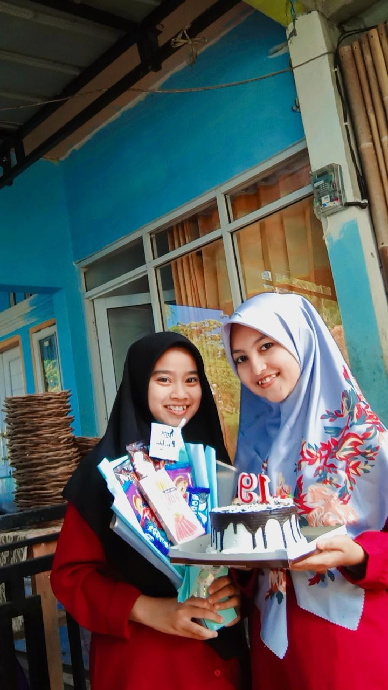

Menu:
Beranda
Biodata
Galeri
Sosial Media
Galeri Foto
B'Day Album
Guys.. Aku ada singkat cerita nih di hari special ini. Jadi Waktu itu adalah ulang tahun aku yang ke 19 tahun, dan waktu itu aku baru lulus SMK, Lulusan Covid ceritanya, gak sad gimana coba :(. Terus Aku kan selama smk itu mondok ya temen temen, tinggal dipesantren, jadi pas keluar smk tuh bingung banget antara lanjut mondok atau enggak, ya singkatnya aku dirumah dlu selama kurang lebih 2 bulanan, baru masuk lagi pesantren setelah itu. ya aku sih dalam waktu 2 bulan itu sedang mencari jati diri aja gtu, mau jadi apa kedepannya dan mau seperti apa. Tapi pada akhirnya aku balik lagi ke pesantren, dalam keadaan waktu tu lagi sad banget, karena aku baru aja broken heart, dan aku merasa sendiri, aku di pesantren ngerasa sendiri karena temen temen aku semuanya udah pada gk disana lagi. Mengingat hari ulang tahun sebentar lagi, aku ngerasa tahun ini pasti menjadi hari ulang tahun terburuk dalam hidup aku, dengan kesendirian kesepian yang aku rasakan. Bayangkan aja, temen gk ada, baru baru broken heart siapa gtu yang mau ngucapin Happy B'day. Tapi ternyata, aku salah guys, mereka adik adik aku, temen aku, anak aku semuanya pada inget dan bikin kejutan buat aku. paling terharu banget dan seneng, kaget juga karena sesuatu yang tidak aku sangka sangka. Karena gk bisa dipungkiri juga kan klo kejutan dari temen dari doi atw dari keluarga itu udh pada ketebak, bnr gak sih :v tapi ini tuh sesuatu yang sama sekali gk aku bayangkan. Kebetulan ulang tahunku itu pas banget sama hari raya idul adha, pas malem malem, masih takbiran aku baru aja tidur, eh dibangunin dikasih kejutan. Nagis lah aku waktu itu, karena ternyata mereka tuh syang sama aku, peduli sama aku. aku udh suudzon sama mereka. Jadilah ulang tahun itu, hari ulang tahun paling mengesan kan bagi aku. Makasih yaaaa,, anak anaknya aku, adiknya aku sekaligus temen aku:) aku abadikan moment nya di album ini.
